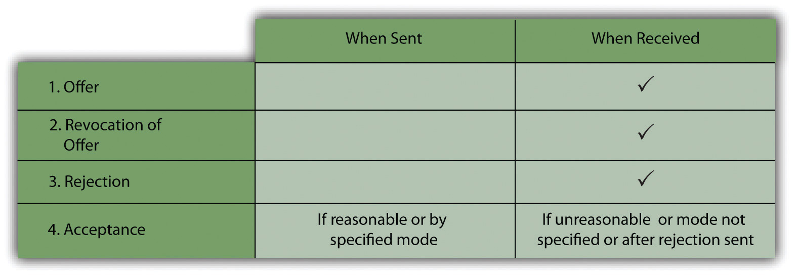

After reading this chapter, you should understand the following:
In this chapter, we begin the first of the four broad inquiries of contract law mentioned in Chapter 8 "Introduction to Contract Law": Did the parties create a valid contract? The answer is not always obvious; the range of factors that must be taken into account can be large, and their relationships subtle. Since businesspeople frequently conduct contract negotiations without the assistance of a lawyer, it is important to attend to the nuances in order to avoid legal trouble at the outset. Whether a contract has been formed depends in turn on whether
Factors 2, 3, and 4 are the subjects of subsequent chapters.
The core of a legal contract is the agreement between the parties. This is not a necessary ingredient; in Communist nations, contracts were (or are, in the few remaining Communist countries) routinely negotiated between parties who had the terms imposed on them. But in the West, and especially in the United States, agreement is of the essence. That is not merely a matter of convenience; it is at the heart of our philosophical and psychological beliefs. As the great student of contract law Samuel Williston put it, “It was a consequence of the emphasis laid on the ego and the individual will that the formation of a contract should seem impossible unless the wills of the parties concurred. Accordingly we find at the end of the eighteenth century, and the beginning of the nineteenth century, the prevalent idea that there must be a “meeting of the minds” (a new phrase) in order to form a contract.”Samuel Williston, “Freedom of Contract,” Cornell Law Quarterly 6 (1921), 365.
Although agreements may take any form, including unspoken conduct between the parties, they are usually structured in terms of an offer and an acceptance.Uniform Commercial Code, Section 2-204(1). These two components will be the focus of our discussion. Note, however, that not every agreement, in the broadest sense of the word, need consist of an offer and an acceptance, and that it is entirely possible, therefore, for two persons to reach agreement without forming a contract. For example, people may agree that the weather is pleasant or that it would be preferable to go out for Chinese food rather than to see a foreign film; in neither case has a contract been formed. One of the major functions of the law of contracts is to sort out those agreements that are legally binding—those that are contracts—from those that are not.
In interpreting agreements, courts generally apply an objective standardJudging something as an outsider would understand it; not subjective. (outwardly, as an observer would interpret; not subjectively). The Restatement (Second) of Contracts defines agreement as a “manifestation of mutual assent by two or more persons to one another.”Uniform Commercial Code, Section 3. The Uniform Commercial Code defines agreement as “the bargain of the parties in fact as found in their language or by implication from other circumstances including course of dealing or usage of trade or course of performance.”Uniform Commercial Code, Section 1-201(3). The critical question is what the parties said or did, not what they thought they said or did, or not what impression they thought they were making.
The distinction between objective and subjective standards crops up occasionally when one person claims he spoke in jest. The vice president of a company that manufactured punchboards, used in gambling, testified to the Washington State Game Commission that he would pay $100,000 to anyone who found a “crooked board.” Barnes, a bartender, who had purchased two boards that were crooked some time before, brought one to the company office and demanded payment. The company refused, claiming that the statement was made in jest (the audience at the commission hearing had laughed when the offer was made). The court disagreed, holding that it was reasonable to interpret the pledge of $100,000 as a means of promoting punchboards:
[I]f the jest is not apparent and a reasonable hearer would believe that an offer was being made, then the speaker risks the formation of a contract which was not intended. It is the objective manifestations of the offeror that count and not secret, unexpressed intentions. If a party’s words or acts, judged by a reasonable standard, manifest an intention to agree in regard to the matter in question, that agreement is established, and it is immaterial what may be the real but unexpressed state of the party’s mind on the subject.Barnes v. Treece, 549 P.2d 1152 (Wash. App. 1976).
Lucy v. Zehmer (Section 9.4.1 "Objective Intention" at the end of the chapter) illustrates that a party’s real state of mind must be expressed to the other party, rather than in an aside to one’s spouse.
Fundamentally, a contract is a legally binding “meeting of the minds” between the parties. It is not the unexpressed intention in the minds of the parties that determines whether there was “a meeting.” The test is objective: how would a reasonable person interpret the interaction?
Offer and acceptance may seem to be straightforward concepts, as they are when two people meet face-to-face. But in a commercial society, the ways of making offers and accepting them are nearly infinite. A retail store advertises its merchandise in the newspaper. A seller makes his offer by mail or over the Internet. A telephone caller states that his offer will stand for ten days. An offer leaves open a crucial term. An auctioneer seeks bids. An offeror gives the offeree a choice. All these situations can raise tricky questions, as can corresponding situations involving acceptances.
The Restatement defines offerThe proposal upon which the contract is based. as “the manifestation of willingness to enter into a bargain, so made as to justify another person in understanding that his assent to that bargain is invited and will conclude it.”Restatement (Second) of Contracts, Section 24. Two key elements are implicit in that definition: the offer must be communicated, and it must be definite. Before considering these requirements, we examine the threshold question of whether an offer was intended. Let us look at proposals that may look like, but are not, offers.
Most advertisements, price quotations, and invitations to bid are not construed as offers. A notice in the newspaper that a bicycle is on sale for $800 is normally intended only as an invitation to the public to come to the store to make a purchase. Similarly, a statement that a seller can “quote” a unit price to a prospective purchaser is not, by itself, of sufficient definiteness to constitute an offer; quantity, time of delivery, and other important factors are missing from such a statement. Frequently, in order to avoid construction of a statement about price and quantity as an offer, a seller or buyer may say, “Make me an offer.” Such a statement obviously suggests that no offer has yet been made. This principle usually applies to invitations for bids (e.g., from contractors on a building project). Many forms used by sales representatives as contracts indicate that by signing, the customer is making an offer to be accepted by the home office and is not accepting an offer made by the sales representative.
Although advertisements, price quotations, and the like are generally not offers, the facts in each case are important. Under the proper circumstances, an advertised statement can be construed as an offer, as shown in the well-known Lefkowitz case (Section 9.4.2 "Advertisements as Offers" at the end of the chapter), in which the offended customer acted as his own lawyer and pursued an appeal to the Minnesota Supreme Court against a Minneapolis department store that took back its advertised offer.
Despite the common-law rule that advertisements are normally to be considered invitations rather than offers, legislation and government regulations may offer redress. For many years, retail food stores have been subject to a rule, promulgated by the Federal Trade Commission (FTC), that goods advertised as “specials” must be available and must be sold at the price advertised. It is unlawful for a retail chain not to have an advertised item in each of its stores and in sufficient quantity, unless the advertisement specifically states how much is stocked and which branch stores do not carry it. Many states have enacted consumer protection statutes that parallel the FTC rule.
Invitations to bid are also not generally construed as offers. An auctioneer does not make offers but solicits offers from the crowd: “May I have an offer?—$500? $450? $450! I have an offer for $450. Do I hear $475? May I have an offer?”
A contract is an agreement in which each party assents to the terms of the other party. Without mutual assent there cannot be a contract, and this implies that the assent each person gives must be with reference to that of the other. If Toni places several alternative offers on the table, only one of which can be accepted, and invites Sandy to choose, no contract is formed if Sandy says merely, “I accept your terms.” Sandy must specify which offer she is assenting to.
From this general proposition, it follows that no contract can be legally binding unless an offer is in fact communicated to the offeree. If you write an e-mail to a friend with an offer to sell your car for a certain sum and then get distracted and forget to send it, no offer has been made. If your friend coincidentally e-mails you the following day and says that she wants to buy your car and names the same sum, no contract has been made. Her e-mail to you is not an acceptance, since she did not know of your offer; it is, instead, an offer or an invitation to make an offer. Nor would there have been a contract if you had sent your communication and the two e-mails crossed in cyberspace. Both e-mails would be offers, and for a valid contract to be formed, it would still be necessary for one of you to accept the other’s offer. An offer is not effective until it is received by the offeree (and that’s also true of a revocation of the offer, and a rejection of the offer by the offeree).
The requirement that an offer be communicated does not mean that every term must be communicated. You call up your friend and offer to sell him your car. You tell him the price and start to tell him that you will throw in the snow tires but will not pay for a new inspection, and that you expect to keep the car another three weeks. Impatiently, he cuts you off and says, “Never mind about all that; I’ll accept your offer on whatever terms you want.” You and he have a contract.
These principles apply to unknown offers of reward. An offer of a reward constitutes a unilateral contract that can be made binding only by performing the task for which the reward is offered. Suppose that Bonnie posts on a tree a sign offering a reward for returning her missing dog. If you saw the sign, found the dog, and returned it, you would have fulfilled the essentials of the offer. But if you chanced upon the dog, read the tag around its neck, and returned it without ever having been aware that a reward was offered, then you have not responded to the offer, even if you acted in the hope that the owner would reward you. There is no contractual obligation.
In many states, a different result follows from an offer of a reward by a governmental entity. Commonly, local ordinances provide that a standing reward of, say, $1,000 will be paid to anyone providing information that leads to the arrest and conviction of arsonists. To collect the reward, it is not necessary for a person who does furnish local authorities with such information to know that a reward ordinance exists. In contract terms, the standing reward is viewed as a means of setting a climate in which people will be encouraged to act in certain ways in the expectation that they will earn unknown rewards. It is also possible to view the claim to a reward as noncontractual; the right to receive it is guaranteed, instead, by the local ordinance.
Although a completed act called for by an unknown private offer does not give rise to a contract, partial performance usually does. Suppose Apex Bakery posts a notice offering a one-week bonus to all bakers who work at least six months in the kitchen. Charlene works two months before discovering the notice on the bulletin board. Her original ignorance of the offer will not defeat her claim to the bonus if she continues working, for the offer serves as an inducement to complete the performance called for.
The common law reasonably requires that an offer spell out the essential proposed terms with sufficient definitenessThe requirement that contracts be certain enough to determine liabilities.—certainty of terms that enables a court to order enforcement or measure damages in the event of a breach. As it has often been put, “The law does not make contracts for the parties; it merely enforces the duties which they have undertaken” (Simpson, 1965, p. 19). Thus a supposed promise to sell “such coal as the promisor may wish to sell” is not an enforceable term because the seller, the coal company, undertakes no duty to sell anything unless it wishes to do so. Essential terms certainly include price and the work to be done. But not every omission is fatal; for example, as long as a missing term can be fixed by referring to some external standard—such as “no later than the first frost”—the offer is sufficiently definite.
In major business transactions involving extensive negotiations, the parties often sign a preliminary “agreement in principle” before a detailed contract is drafted. These preliminary agreements may be definite enough to create contract liability even though they lack many of the terms found in a typical contract. For example, in a famous 1985 case, a Texas jury concluded that an agreement made “in principle” between the Pennzoil Company and the Getty Oil Company and not entirely finished was binding and that Texaco had unlawfully interfered with their contract. As a result, Texaco was held liable for over $10 billion, which was settled for $3 billion after Texaco went into bankruptcy.
Offers that state alternatives are definitive if each alternative is definite. David offers Sheila the opportunity to buy one of two automobiles at a fixed price, with delivery in two months and the choice of vehicle left to David. Sheila accepts. The contract is valid. If one of the cars is destroyed in the interval before delivery, David is obligated to deliver the other car. Sometimes, however, what appears to be an offer in the alternative may be something else. Charles makes a deal to sell his business to Bernie. As part of the bargain, Charles agrees not to compete with Bernie for the next two years, and if he does, to pay $25,000. Whether this is an alternative contract depends on the circumstances and intentions of the parties. If it is, then Charles is free to compete as long as he pays Bernie $25,000. On the other hand, the intention might have been to prevent Charles from competing in any event; hence a court could order payment of the $25,000 as damages for a breach and still order Charles to refrain from competition until the expiration of the two-year period.
The Uniform Commercial Code (UCC) is generally more liberal in its approach to definiteness than is the common law—at least as the common law was interpreted in the heyday of classical contract doctrine. Section 2-204(3) states the rule: “Even though one or more terms are left open, a contract for sale does not fail for indefiniteness if the parties have intended to make a contract and there is a reasonably certain basis for giving an appropriate remedy.”
The drafters of the UCC sought to give validity to as many contracts as possible and grounded that validity on the intention of the parties rather than on formalistic requirements. As the official comment to Section 2-204(3) notes, “If the parties intend to enter into a binding agreement, this subsection recognizes that agreement as valid in law, despite missing terms, if there is any reasonably certain basis for granting a remedy.…Commercial standards on the point of ‘indefiniteness’ are intended to be applied.” Other sections of the UCC spell out rules for filling in such open provisions as price, performance, and remedies.Chiefly, Uniform Commercial Code, Sections 2-305 through 2-310.
One of these sections, Section 2-306(1), provides that a contract term under which a buyer agrees to purchase the seller’s entire output of goods (an “outputs contract”) or a seller agrees to meet all the buyer’s requirements (a “requirements” or “needs” contract) means output or requirements that occur in good faith. A party to such a contract cannot offer or demand a quantity that is “unreasonably disproportionate” to a stated estimate or past quantities.
An offer need not be accepted on the spot. Because there are numerous ways of conveying an offer and numerous contingencies that may be part of the offer’s subject matter, the offeror might find it necessary to give the offeree considerable time to accept or reject the offer. By the same token, an offer cannot remain open forever, so that once given, it never lapses and cannot be terminated. The law recognizes seven ways by which the offer can expire (besides acceptance, of course): revocation, rejection by the offeree, counteroffer, acceptance with counteroffer, lapse of time, death or insanity of a person or destruction of an essential term, and illegality. We will examine each of these in turn.
People are free to make contracts and, in general, to revoke them.
The general rule, both in common law and under the UCC, is that the offeror may revoke his or her offer at any time before acceptance, even if the offer states that it will remain open for a specified period of time. Neil offers Arlene his car for $5,000 and promises to keep the offer open for ten days. Two days later, Neil calls Arlene to revoke the offer. The offer is terminated, and Arlene’s acceptance thereafter, though within the ten days, is ineffective. But if Neil had sent his revocationThe withdrawal of an offer by the offeror. (the taking back of an offer before it is accepted) by mail, and if Arlene, before she received it, had telephoned her acceptance, there would be a contract, since revocation is effective only when the offeree actually receives it. There is an exception to this rule for offers made to the public through newspaper or like advertisements. The offeror may revoke a public offering by notifying the public by the same means used to communicate the offer. If no better means of notification is reasonably available, the offer is terminated even if a particular offeree had no actual notice.
Revocation may be communicated indirectly. If Arlene had learned from a friend that Neil had sold his car to someone else during the ten-day period, she would have had sufficient notice. Any attempt to accept Neil’s offer would have been futile.
Not every type of offer is revocable. One type of offer that cannot be revoked is the option contractA promise to keep an offer open for some time; must be supported by consideration. (the promisor explicitly agrees for consideration to limit his right to revoke). Arlene tells Neil that she cannot make up her mind in ten days but that she will pay him $25 to hold the offer open for thirty days. Neil agrees. Arlene has an option to buy the car for $5,000; if Neil should sell it to someone else during the thirty days, he will have breached the contract with Arlene. Note that the transactions involving Neil and Arlene consist of two different contracts. One is the promise of a thirty-day option for the promise of $25. It is this contract that makes the option binding and is independent of the original offer to sell the car for $5,000. The offer can be accepted and made part of an independent contract during the option period.
Partial performance of a unilateral contract creates an option. Although the option is not stated explicitly, it is recognized by law in the interests of justice. Otherwise, an offeror could induce the offeree to go to expense and trouble without ever being liable to fulfill his or her part of the bargain. Before the offeree begins to carry out the contract, the offeror is free to revoke the offer. But once performance begins, the law implies an option, allowing the offeree to complete performance according to the terms of the offer. If, after a reasonable time, the offeree does not fulfill the terms of the offer, then it may be revoked.
The UCC changes the common-law rule for offers by merchants. Under Section 2-205, a firm offerA UCC option made in writing and signed by a merchant, promising to keep an offer open; needs no consideration. (a written and signed promise by a merchant to hold an offer to buy or sell goods for some period of time) is irrevocable. That is, an option is created, but no consideration is required. The offer must remain open for the time period stated or, if no time period is given, for a reasonable period of time, which may not exceed three months.
By law, certain types of offers may not be revoked (statutory irrevocability), despite the absence of language to that effect in the offer itself. One major category of such offers is that of the contractor submitting a bid to a public agency. The general rule is that once the period of bidding opens, a bidder on a public contract may not withdraw his or her bid unless the contracting authority consents. The contractor who purports to withdraw is awarded the contract based on the original bid and may be sued for damages for nonperformance.
RejectionA manifestation of refusal to agree to the terms of an offer. (a manifestation of refusal to agree to the terms of an offer) of the offer is effective when the offeror receives it. A subsequent change of mind by the offeree cannot revive the offer. Donna calls Chuck to reject Chuck’s offer to sell his lawn mower. Chuck is then free to sell it to someone else. If Donna changes her mind and calls Chuck back to accept after all, there still is no contract, even if Chuck has made no further effort to sell the lawn mower. Having rejected the original offer, Donna, by her second call, is not accepting but making an offer to buy. Suppose Donna had written Chuck to reject, but on changing her mind, decided to call to accept before the rejection letter arrived. In that case, the offer would have been accepted.
A counterofferA response to an offer that changes its terms., a response that varies the terms of an offer, is a rejection. Jones offers Smith a small parcel of land for $10,000 and says the offer will remain open for one month. Smith responds ten days later, saying he will pay $5,000. Jones’s original offer has thereby been rejected. If Jones now declines Smith’s counteroffer, may Smith bind Jones to his original offer by agreeing to pay the full $10,000? He may not, because once an original offer is rejected, all the terms lapse. However, an inquiry by Smith as to whether Jones would consider taking less is not a counteroffer and would not terminate the offer.
This is not really an acceptance at all but is a counteroffer: an acceptance that changes the terms of the offer is a counteroffer and terminates the offer. The common law imposes a mirror image ruleCommon-law rule that the acceptance must be the same as the offer.: the acceptance must match the offer in all its particulars or the offer is rejected. However, if an acceptance that requests a change or an addition to the offer does not require the offeror’s assent, then the acceptance is valid. The broker at Friendly Real Estate offers you a house for $320,000. You accept but include in your acceptance “the vacant lot next door.” Your acceptance is a counteroffer, which serves to terminate the original offer. If, instead, you had said, “It’s a deal, but I’d prefer it with the vacant lot next door,” then there is a contract because you are not demanding that the broker abide by your request. If you had said, “It’s a deal, and I’d also like the vacant lot next door,” you have a contract, because the request for the lot is a separate offer, not a counteroffer rejecting the original proposal.
The UCC is more liberal than the common law in allowing contracts to be formed despite counteroffers and in incorporating the counteroffers into the contracts. This UCC provision is necessary because the use of routine forms for contracts is very common, and if the rule were otherwise, much valuable time would be wasted by drafting clauses tailored to the precise wording of the routine printed forms. A buyer and a seller send out documents accompanying or incorporating their offers and acceptances, and the provisions in each document rarely correspond precisely. Indeed, it is often the case that one side’s form contains terms favorable to it but inconsistent with terms on the other side’s form. Section 2-207 of the UCC attempts to resolve this “battle of the forms” by providing that additional terms or conditions in an acceptance operate as such unless the acceptance is conditioned on the offeror’s consent to the new or different terms. The new terms are construed as offers but are automatically incorporated in any contract between merchants for the sale of goods unless “(a) the offer expressly limits acceptance to the terms of the offer; (b) [the terms] materially alter it; or (c) notification of objection to them has already been given or is given within a reasonable time after notice of them is received.”
An example of terms that become part of the contract without being expressly agreed to are clauses providing for interest payments on overdue bills. Examples of terms that would materially alter the contract and hence need express approval are clauses that negate the standard warranties that sellers give buyers on their merchandise.
Frequently, parties use contract provisions to prevent the automatic introduction of new terms. A typical seller’s provision is as follows:
Amendments
Any modification of this document by the Buyer, and all additional or different terms included in Buyer’s purchase order or any other document responding to this offer, are hereby objected to. BY ORDERING THE GOODS HERE FOR SHIPMENT, BUYER AGREES TO ALL THE TERMS AND CONDITIONS CONTAINED ON BOTH SIDES OF THIS DOCUMENT.
Section 2-207 of the UCC, liberalizing the mirror image rule, is pervasive, covering all sorts of contracts, from those between industrial manufacturers to those between friends.
Offers are not open-ended; they lapse after some period of time. An offer may contain its own specific time limitation—for example, “until close of business today.”
In the absence of an expressly stated time limit, the common-law rule is that the offer expires at the end of a “reasonable” time. Such a period is a factual question in each case and depends on the particular circumstances, including the nature of the service or property being contracted for, the manner in which the offer is made, and the means by which the acceptance is expected to be made. Whenever the contract involves a speculative transaction—the sale of securities or land, for instance—the time period will depend on the nature of the security and the risk involved. In general, the greater the risk to the seller, the shorter the period of time. Karen offers to sell Gary a block of oil stocks that are fluctuating rapidly hour by hour. Gary receives the offer an hour before the market closes; he accepts by fax two hours after the market has opened the next morning and after learning that the stock has jumped up significantly. The time period has lapsed if Gary was accepting a fixed price that Karen set, but it may still be open if the price is market price at time of delivery. (Under Section 41 of the Restatement, an offer made by mail is “seasonably accepted if an acceptance is mailed at any time before midnight on the day on which the offer is received.”)
For unilateral contracts, both the common law and the UCC require the offeree to notify the offeror that he has begun to perform the terms of the contract. Without notification, the offeror may, after a reasonable time, treat the offer as having lapsed.
The death or insanity of the offeror prior to acceptance terminates the offer; the offer is said to die with the offeror. (Notice, however, that the death of a party to a contract does not necessarily terminate the contract: the estate of a deceased person may be liable on a contract made by the person before death.)
Destruction of something essential to the contract also terminates the offer. You offer to sell your car, but the car is destroyed in an accident before your offer is accepted; the offer is terminated.
A statute making unlawful the object of the contract will terminate the offer if the statute takes effect after the offer was made. Thus an offer to sell a quantity of herbal weight-loss supplements will terminate if the Food and Drug Administration outlaws the sale of such supplements.
An offer is a manifestation of willingness to enter into a contract, effective when received. It must be communicated to the offeree, be made intentionally (according to an objective standard), and be definite enough to determine a remedy in case of breach. An offer terminates in one of seven ways: revocation before acceptance (except for option contracts, firm offers under the UCC, statutory irrevocability, and unilateral offers where an offeree has commenced performance); rejection; counteroffer; acceptance with counteroffer; lapse of time (as stipulated or after a reasonable time); death or insanity of the offeror before acceptance or destruction of subject matter essential to the offer; and postoffer illegality.
To result in a legally binding contract, an offer must be accepted by the offeree. Just as the law helps define and shape an offer and its duration, so the law governs the nature and manner of acceptanceAssent to the terms of the offer.. The Restatement defines acceptance of an offer as “a manifestation of assent to the terms thereof made by the offeree in a manner invited or required by the offer.”Restatement (Second) of Contracts, Section 24.The assent may be either by the making of a mutual promise or by performance or partial performance. If there is doubt about whether the offer requests a return promise or a return act, the Restatement, Section 32, provides that the offeree may accept with either a promise or performance. The Uniform Commercial Code (UCC) also adopts this view; under Section 2-206(1)(a), “an offer to make a contract shall be construed as inviting acceptance in any manner and by any medium reasonable in the circumstances” unless the offer unambiguously requires a certain mode of acceptance.
The identity of the offeree is usually clear, even if the name is unknown. The person to whom a promise is made is ordinarily the person whom the offeror contemplates will make a return promise or perform the act requested. But this is not invariably so. A promise can be made to one person who is not expected to do anything in return. The consideration necessary to weld the offer and acceptance into a legal contract can be given by a third party. Under the common law, whoever is invited to furnish consideration to the offeror is the offeree, and only an offeree may accept an offer. A common example is sale to a minor. George promises to sell his automobile to Bartley, age seventeen, if Bartley’s father will promise to pay $3,500 to George. Bartley is the promisee (the person to whom the promise is made) but not the offeree; Bartley cannot legally accept George’s offer. Only Bartley’s father, who is called on to pay for the car, can accept, by making the promise requested. And notice what might seem obvious: a promise to perform as requested in the offer is itself a binding acceptance.
As noted previously, an offer, a revocation of the offer, and a rejection of the offer are not effective until received. The same rule does not always apply to the acceptance.
Of course, in many instances the moment of acceptance is not in question: in face-to-face deals or transactions negotiated by telephone, the parties extend an offer and accept it instantaneously during the course of the conversation. But problems can arise in contracts negotiated through correspondence.
One common situation arises when the offeror stipulates the mode of acceptance (e.g., return mail, fax, or carrier pigeon). If the offeree uses the stipulated mode, then the acceptance is deemed effective when sent. Even though the offeror has no knowledge of the acceptance at that moment, the contract has been formed. Moreover, according to the Restatement, Section 60, if the offeror says that the offer can be accepted only by the specified mode, that mode must be used. (It is said that “the offeror is the master of the offer.”)
If the offeror specifies no particular mode, then acceptance is effective when transmitted, as long as the offeree uses a reasonable method of acceptance. It is implied that the offeree can use the same means used by the offeror or a means of communication customary to the industry.
The use of the postal service is customary, so acceptances are considered effective when mailed, regardless of the method used to transmit the offer. Indeed, the so-called mailbox ruleCommon-law rule that acceptance is effective when dropped in mail. has a lineage tracing back more than one hundred years to the English courts.Adams v. Lindsell, 1 Barnewall & Alderson 681 (K.B. 1818).
The mailbox rule may seem to create particular difficulties for people in business, since the acceptance is effective even though the offeror is unaware of the acceptance, and even if the letter is lost and never arrives. But the solution is the same as the rationale for the rule. In contracts negotiated through correspondence, there will always be a burden on one of the parties. If the rule were that the acceptance is not effective until received by the offeror, then the offeree would be on tenterhooks, rather than the other way around, as is the case with the present rule. As between the two, it seems fairer to place the burden on the offeror, since he or she alone has the power to fix the moment of effectiveness. All the offeror need do is specify in the offer that acceptance is not effective until received.
In all other cases—that is, when the offeror fails to specify the mode of acceptance and the offeree uses a mode that is not reasonable—acceptance is deemed effective only when received.
When the offeree sends a rejection first and then later transmits a superseding acceptance, the “effective when received” rule also applies. Suppose a seller offers a buyer two cords of firewood and says the offer will remain open for a week. On the third day, the buyer writes the seller, rejecting the offer. The following evening, the buyer rethinks his firewood needs, and on the morning of the fifth day, he sends an e-mail accepting the seller’s terms. The previously mailed letter arrives the following day. Since the letter had not yet been received, the offer had not been rejected. For there to be a valid contract, the e-mailed acceptance must arrive before the mailed rejection. If the e-mail were hung up in cyberspace, although through no fault of the buyer, so that the letter arrived first, the seller would be correct in assuming the offer was terminated—even if the e-mail arrived a minute later. In short, where “the acceptance outruns the rejection” the acceptance is effective. See Figure 9.1.
Figure 9.1
When Is Communication Effective?
Electronic communications have, of course, become increasingly common. Many contracts are negotiated by e-mail, accepted and “signed” electronically. Generally speaking, this does not change the rules. The Uniform Electronic Transactions Act (UETA)A US law generally making electronic contracting valid and the contracts enforceable. was promulgated (i.e., disseminated for states to adopt) in 1999. It is one of a number of uniform acts, like the Uniform Commercial Code. As of June 2010, forty-seven states and the US Virgin Islands had adopted the statute. The introduction to the act provides that “the purpose of the UETA is to remove barriers to electronic commerce by validating and effectuating electronic records and signatures.”The National Conference of Commissioners on Uniform State Laws, Uniform Electronic Transactions Act (1999) (Denver: National Conference of Commissioners on Uniform State Laws, 1999), accessed March 29, 2011, http://www.law.upenn.edu/bll/archives/ulc/fnact99/1990s/ueta99.pdf. In general, the UETA provides the following:
The UETA, though, doesn’t address all the problems with electronic contracting. Clicking on a computer screen may constitute a valid acceptance of a contractual offer, but only if the offer is clearly communicated. In Specht v. Netscape Communications Corp., customers who had downloaded a free online computer program complained that it effectively invaded their privacy by inserting into their machines “cookies”; they wanted to sue, but the defendant said they were bound to arbitration.Specht v. Netscape Communications Corp., 306 F.3d 17 (2d Cir. 2002). They had clicked on the Download button, but hidden below it were the licensing terms, including the arbitration clause. The federal court of appeals held that there was no valid acceptance. The court said, “We agree with the district court that a reasonably prudent Internet user in circumstances such as these would not have known or learned of the existence of the license terms before responding to defendants’ invitation to download the free software, and that defendants therefore did not provide reasonable notice of the license terms. In consequence, the plaintiffs’ bare act of downloading the software did not unambiguously manifest assent to the arbitration provision contained in the license terms.”
If a faxed document is sent but for some reason not received or not noticed, the emerging law is that the mailbox rule does not apply. A court would examine the circumstances with care to determine the reason for the nonreceipt or for the offeror’s failure to notice its receipt. A person has to have fair notice that his or her offer has been accepted, and modern communication makes the old-fashioned mailbox rule—that acceptance is effective upon dispatch—problematic.See, for example, Clow Water Systems Co. v. National Labor Relations Board, 92 F.3d 441 (6th Cir. 1996).
Ordinarily, for there to be a contract, the offeree must make some positive manifestation of assent to the offeror’s terms. The offeror cannot usually word his offer in such a way that the offeree’s failure to respond can be construed as an acceptance.
The Restatement, Section 69, gives three situations, however, in which silence can operate as an acceptance. The first occurs when the offeree avails himself of services proffered by the offeror, even though he could have rejected them and had reason to know that the offeror offered them expecting compensation. The second situation occurs when the offer states that the offeree may accept without responding and the offeree, remaining silent, intends to accept. The third situation is that of previous dealings, in which only if the offeree intends not to accept is it reasonable to expect him to say so.
As an example of the first type of acceptance by silence, assume that a carpenter happens by your house and sees a collapsing porch. He spots you in the front yard and points out the deterioration. “I’m a professional carpenter,” he says, “and between jobs. I can fix that porch for you. Somebody ought to.” You say nothing. He goes to work. There is an implied contract, with the work to be done for the carpenter’s usual fee.
To illustrate the second situation, suppose that a friend has left her car in your garage. The friend sends you a letter in which she offers you the car for $4,000 and adds, “If I don’t hear from you, I will assume that you have accepted my offer.” If you make no reply, with the intention of accepting the offer, a contract has been formed.
The third situation is illustrated by Section 9.4.3 "Silence as Acceptance", a well-known decision made by Justice Oliver Wendell Holmes Jr. when he was sitting on the Supreme Court of Massachusetts.
Without an acceptance of an offer, no contract exists, and once an acceptance is made, a contract is formed. If the offeror stipulates how the offer should be accepted, so be it. If there is no stipulation, any reasonable means of communication is good. Offers and revocations are usually effective upon receipt, while an acceptance is effective on dispatch. The advent of electronic contracting has caused some modification of the rules: courts are likely to investigate the facts surrounding the exchange of offer and acceptance more carefully than previously. But the nuances arising because of the mailbox rule and acceptance by silence still require close attention to the facts.
Lucy v. Zehmer
84 S.E.2d 516 (Va. 1954)
Buchanan, J.
This suit was instituted by W. O. Lucy and J. C. Lucy, complainants, against A. H. Zehmer and Ida S. Zehmer, his wife, defendants, to have specific performance of a contract by which it was alleged the Zehmers had sold to W. O. Lucy a tract of land owned by A. H. Zehmer in Dinwiddie county containing 471.6 acres, more or less, known as the Ferguson farm, for $50,000. J. C. Lucy, the other complainant, is a brother of W. O. Lucy, to whom W. O. Lucy transferred a half interest in his alleged purchase.
The instrument sought to be enforced was written by A. H. Zehmer on December 20, 1952, in these words: “We hereby agree to sell to W. O. Lucy the Ferguson farm complete for $50,000.00, title satisfactory to buyer,” and signed by the defendants, A. H. Zehmer and Ida S. Zehmer.
The answer of A. H. Zehmer admitted that at the time mentioned W. O. Lucy offered him $50,000 cash for the farm, but that he, Zehmer, considered that the offer was made in jest; that so thinking, and both he and Lucy having had several drinks, he wrote out “the memorandum” quoted above and induced his wife to sign it; that he did not deliver the memorandum to Lucy, but that Lucy picked it up, read it, put it in his pocket, attempted to offer Zehmer $5 to bind the bargain, which Zehmer refused to accept, and realizing for the first time that Lucy was serious, Zehmer assured him that he had no intention of selling the farm and that the whole matter was a joke. Lucy left the premises insisting that he had purchased the farm.…
In his testimony Zehmer claimed that he “was high as a Georgia pine,” and that the transaction “was just a bunch of two doggoned drunks bluffing to see who could talk the biggest and say the most.” That claim is inconsistent with his attempt to testify in great detail as to what was said and what was done.…
If it be assumed, contrary to what we think the evidence shows, that Zehmer was jesting about selling his farm to Lucy and that the transaction was intended by him to be a joke, nevertheless the evidence shows that Lucy did not so understand it but considered it to be a serious business transaction and the contract to be binding on the Zehmers as well as on himself. The very next day he arranged with his brother to put up half the money and take a half interest in the land. The day after that he employed an attorney to examine the title. The next night, Tuesday, he was back at Zehmer’s place and there Zehmer told him for the first time, Lucy said, that he wasn’t going to sell and he told Zehmer, “You know you sold that place fair and square.” After receiving the report from his attorney that the title was good he wrote to Zehmer that he was ready to close the deal.
Not only did Lucy actually believe, but the evidence shows he was warranted in believing, that the contract represented a serious business transaction and a good faith sale and purchase of the farm.
In the field of contracts, as generally elsewhere, “We must look to the outward expression of a person as manifesting his intention rather than to his secret and unexpressed intention. The law imputes to a person an intention corresponding to the reasonable meaning of his words and acts.”
At no time prior to the execution of the contract had Zehmer indicated to Lucy by word or act that he was not in earnest about selling the farm. They had argued about it and discussed its terms, as Zehmer admitted, for a long time. Lucy testified that if there was any jesting it was about paying $50,000 that night. The contract and the evidence show that he was not expected to pay the money that night. Zehmer said that after the writing was signed he laid it down on the counter in front of Lucy. Lucy said Zehmer handed it to him. In any event there had been what appeared to be a good faith offer and a good faith acceptance, followed by the execution and apparent delivery of a written contract. Both said that Lucy put the writing in his pocket and then offered Zehmer $5 to seal the bargain. Not until then, even under the defendants’ evidence, was anything said or done to indicate that the matter was a joke. Both of the Zehmers testified that when Zehmer asked his wife to sign he whispered that it was a joke so Lucy wouldn’t hear and that it was not intended that he should hear.
The mental assent of the parties is not requisite for the formation of a contract. If the words or other acts of one of the parties have but one reasonable meaning, his undisclosed intention is immaterial except when an unreasonable meaning which he attaches to his manifestations is known to the other party.
“* * * The law, therefore, judges of an agreement between two persons exclusively from those expressions of their intentions which are communicated between them. * * *.” [Citation]
An agreement or mutual assent is of course essential to a valid contract but the law imputes to a person an intention corresponding to the reasonable meaning of his words and acts. If his words and acts, judged by a reasonable standard, manifest an intention to agree, it is immaterial what may be the real but unexpressed state of his mind.
So a person cannot set up that he was merely jesting when his conduct and words would warrant a reasonable person in believing that he intended a real agreement.
Whether the writing signed by the defendants and now sought to be enforced by the complainants was the result of a serious offer by Lucy and a serious acceptance by the defendants, or was a serious offer by Lucy and an acceptance in secret jest by the defendants, in either event it constituted a binding contract of sale between the parties.…
Reversed and remanded.
Lefkowitz v. Great Minneapolis Surplus Store
86 N.W.2d 689 (Minn. 1957)
Murphy, Justice.
This is an appeal from an order of the Municipal Court of Minneapolis denying the motion of the defendant for amended findings of fact, or, in the alternative, for a new trial. The order for judgment awarded the plaintiff the sum of $138.50 as damages for breach of contract.
This case grows out of the alleged refusal of the defendant to sell to the plaintiff a certain fur piece which it had offered for sale in a newspaper advertisement. It appears from the record that on April 6, 1956, the defendant published the following advertisement in a Minneapolis newspaper:
Saturday 9 A.M. Sharp
3 Brand New Fur Coats Worth to $100.00
First Come
First Served
$1 Each
[The $100 coat would be worth about $800 in 2010 dollars.] On April 13, the defendant again published an advertisement in the same newspaper as follows:
Saturday 9 A.M.
2 Brand New Pastel Mink 3-Skin Scarfs
Selling for. $89.50
Out they go Saturday. Each…$1.00
1 Black Lapin Stole Beautiful, worth $139.50…$1.00
First Come First Served
The record supports the findings of the court that on each of the Saturdays following the publication of the above-described ads the plaintiff was the first to present himself at the appropriate counter in the defendant’s store and on each occasion demanded the coat and the stole so advertised and indicated his readiness to pay the sale price of $1. On both occasions, the defendant refused to sell the merchandise to the plaintiff, stating on the first occasion that by a “house rule” the offer was intended for women only and sales would not be made to men, and on the second visit that plaintiff knew defendant’s house rules.
The trial court properly disallowed plaintiff’s claim for the value of the fur coats since the value of these articles was speculative and uncertain. The only evidence of value was the advertisement itself to the effect that the coats were “Worth to $100.00,” how much less being speculative especially in view of the price for which they were offered for sale. With reference to the offer of the defendant on April 13, 1956, to sell the “1 Black Lapin Stole * * * worth $139.50 * * *” the trial court held that the value of this article was established and granted judgment in favor of the plaintiff for that amount less the $1 quoted purchase price.
The defendant contends that a newspaper advertisement offering items of merchandise for sale at a named price is a “unilateral offer” which may be withdrawn without notice. He relies upon authorities which hold that, where an advertiser publishes in a newspaper that he has a certain quantity or quality of goods which he wants to dispose of at certain prices and on certain terms, such advertisements are not offers which become contracts as soon as any person to whose notice they may come signifies his acceptance by notifying the other that he will take a certain quantity of them. Such advertisements have been construed as an invitation for an offer of sale on the terms stated, which offer, when received, may be accepted or rejected and which therefore does not become a contract of sale until accepted by the seller; and until a contract has been so made, the seller may modify or revoke such prices or terms. [Citations]
…On the facts before us we are concerned with whether the advertisement constituted an offer, and, if so, whether the plaintiff’s conduct constituted an acceptance.
There are numerous authorities which hold that a particular advertisement in a newspaper or circular letter relating to a sale of articles may be construed by the court as constituting an offer, acceptance of which would complete a contract. [Citations]
The test of whether a binding obligation may originate in advertisements addressed to the general public is “whether the facts show that some performance was promised in positive terms in return for something requested.” 1 Williston, Contracts (Rev. ed.) s 27.
The authorities above cited emphasize that, where the offer is clear, definite, and explicit, and leaves nothing open for negotiation, it constitutes an offer, acceptance of which will complete the contract.…
Whether in any individual instance a newspaper advertisement is an offer rather than an invitation to make an offer depends on the legal intention of the parties and the surrounding circumstances. [Citations] We are of the view on the facts before us that the offer by the defendant of the sale of the Lapin fur was clear, definite, and explicit, and left nothing open for negotiation. The plaintiff having successfully managed to be the first one to appear at the seller’s place of business to be served, as requested by the advertisement, and having offered the stated purchase price of the article, he was entitled to performance on the part of the defendant. We think the trial court was correct in holding that there was in the conduct of the parties a sufficient mutuality of obligation to constitute a contract of sale.
Affirmed.
Hobbs v.Massasoit Whip Co.
33 N.E. 495 (Mass. 1893)
Holmes, J.
This is an action for the price of eel skins sent by the plaintiff to the defendant, and kept by the defendant some months, until they were destroyed. It must be taken that the plaintiff received no notice that the defendant declined to accept the skins. The case comes before us on exceptions to an instruction to the jury that, whether there was any prior contract or not, if skins are sent to the defendant, and it sees fit, whether it has agreed to take them or not, to lie back, and to say nothing, having reason to suppose that the man who has sent them believes that it is taking them, since it says nothing about it, then, if it fails to notify, the jury would be warranted in finding for the plaintiff.
Standing alone, and unexplained, this proposition might seem to imply that one stranger may impose a duty upon another, and make him a purchaser, in spite of himself, by sending goods to him, unless he will take the trouble, and bear the expense, of notifying the sender that he will not buy. The case was argued for the defendant on that interpretation. But, in view of the evidence, we do not understand that to have been the meaning of the judge and we do not think that the jury can have understood that to have been his meaning. The plaintiff was not a stranger to the defendant, even if there was no contract between them. He had sent eel skins in the same way four or five times before, and they had been accepted and paid for. On the defendant’s testimony, it was fair to assume that if it had admitted the eel skins to be over 22 inches in length, and fit for its business, as the plaintiff testified and the jury found that they were, it would have accepted them; that this was understood by the plaintiff; and, indeed, that there was a standing offer to him for such skins.
In such a condition of things, the plaintiff was warranted in sending the defendant skins conforming to the requirements, and even if the offer was not such that the contract was made as soon as skins corresponding to its terms were sent, sending them did impose on the defendant a duty to act about them; and silence on its part, coupled with a retention of the skins for an unreasonable time, might be found by the jury to warrant the plaintiff in assuming that they were accepted, and thus to amount to an acceptance. [Citations] The proposition stands on the general principle that conduct which imports acceptance or assent is acceptance or assent, in the view of the law, whatever may have been the actual state of mind of the party—a principle sometimes lost sight of in the cases. [Citations]
Exceptions overruled.
Whether a legally valid contract was formed depends on a number of factors, including whether the parties reached agreement, whether consideration was present, and whether the agreement was legal. Agreement may seem like an intuitive concept, but intuition is not a sufficient guide to the existence of agreement in legal terms. The most common way of examining an agreement for legal sufficiency is by determining whether a valid offer and acceptance were made.
An offer is a manifestation of willingness to enter into a bargain such that it would be reasonable for another individual to conclude that assent to the offer would complete the bargain. Offers must be communicated and must be definite; that is, they must spell out terms to which the offeree can assent.
An important aspect of the offer is its duration. An offer can expire in any one of several ways: (1) rejection, (2) counteroffer, (3) acceptance with counteroffer, (4) lapse of time, (5) death or insanity of the offeror or destruction of an essential term, (6) illegality, and (7) revocation. No understanding of agreement is complete without a mastery of these conditions.
To constitute an agreement, an offer must be accepted.
The offeree must manifest his assent to the terms of the offer in a manner invited or required by the offer. Complications arise when an offer is accepted indirectly through correspondence. Although offers and revocations of offers are not effective until received, an acceptance is deemed accepted when sent if the offeree accepts in the manner specified by the offeror. But the nuances that arise because of the mailbox rule and acceptance by silence require close attention to the circumstances of each agreement.
Acme Corporation sent the following letter, here set out in its entirety:
January 2, 2012
Acme Corporation
We hereby offer you 100 Acme golden widgets, size 6. This offer will be good for 10 days.
[Signed] Roberta Acme
Owner, Acme Corporation
Is this offer irrevocable for the time stated? Explain.
In interpreting agreements for the purpose of establishing whether a valid contract exists, courts generally apply
A valid offer must be
An offer
An offer generally
An acceptance is generally considered effective